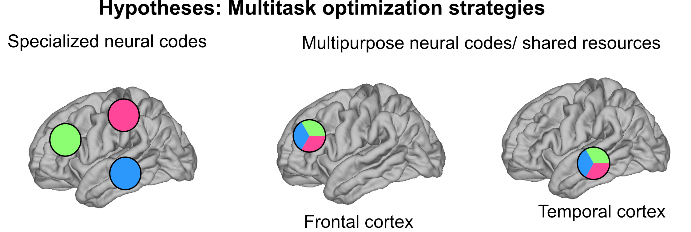

Completed Projects
Predictions enable top-down pattern separation in the macaque face-processing hierarchy.

Distinguishing faces requires well distinguishable neural activity patterns. Contextual information may separate neural representations, leading to enhanced identity recognition. Here, we use functional magnetic resonance imaging to investigate how predictions derived from contextual information affect the separability of neural activity patterns in the macaque face-processing system, a 3-level processing hierarchy in ventral visual cortex. We find that in the presence of predictions, early stages of this hierarchy exhibit well separable and high-dimensional neural geometries resembling those at the top of the hierarchy. This is accompanied by a systematic shift of tuning properties from higher to lower areas, endowing lower areas with higher-order, invariant representations instead of their feedforward tuning properties. Thus, top-down signals dynamically transform neural representations of faces into separable and high-dimensional neural geometries. Our results provide evidence how predictive context transforms flexible representational spaces to optimally use the computational resources provided by cortical processing hierarchies for better and faster distinction of facial identities.
Ongoing Projects
1) Feature specific bi-directional exchange of predictions and prediction errors in the macaque face-processing network.
This project investigates the interplay of predictions and prediction errors in the macaque face-processing network using simultaneous electrophysiology recordings in two face areas known to have feedforward and feedback connections.
2) Multiple task-demands flexibly optimize neural geometry in human temporal cortex.
This project explores how the brain flexibly adapts to different task demands using intracranial electrophysiology recordings in humans. It investigates how neural geometry in the entire visual processing hierarchy is flexibly optimized when multiple tasks are performed.
3) How predictions derived from motion facilitate processing of static information in faces, i.e. identity recognition?
Electrophysiology in the macaque face-processing areas
4) Other ongoing collaborative projects
- How neural entrainment to environmental structure affects neural codes for face processing
- Coding of low-level visual features in the ventral visual stream.